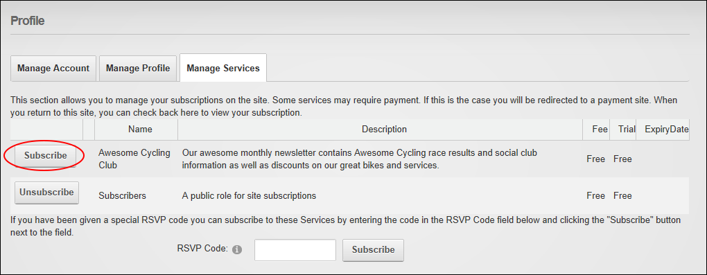

Subscribing to a Member Service
How to subscribe to a member's service. Once a user subscribes they immediately gain access to any modules or pages restricted to this service. The user may need to refresh their Web browser to view additional areas of access.
- Login to the site. See "Logging into a Site"
- Click on your [Display Name] link (typically located in the top right corner of the site) - OR - Navigate to a ViewProfile module. This displays the user profile page.
- Click the Edit Profile link. This displays the Manage Profile page.
- Select the Manage Services tab. This displays a list of the available services.
- Click the Subscribe button beside the service you want to subscribe to. If a fee is charged for this service you will now be redirected to the payment website to complete the payment process. Once you have successfully subscribed to the service this message is displayed at the top of the module: "
 You have successfully subscribed to the [Service Name] role."
You have successfully subscribed to the [Service Name] role."

- Optional. Refresh (Ctrl+5) your website browser to access any new areas such as pages or modules. If this is not successful, try logging out and then logging in again.